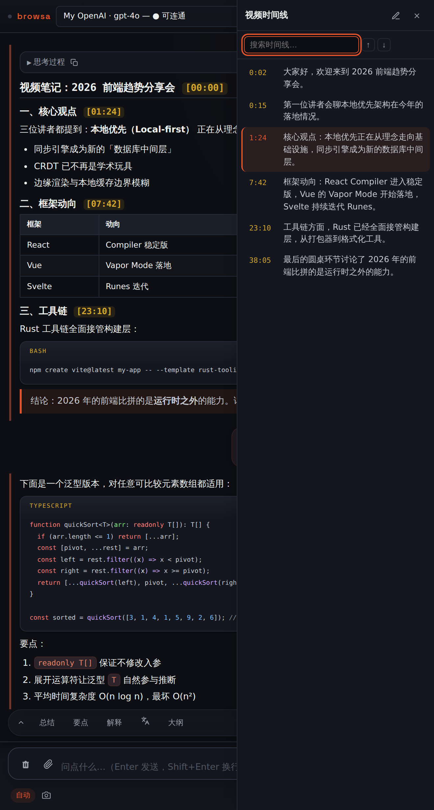

Video workflow
Watching a video with the AI alongside is browsa's most complete scenario: summaries carry timestamps, the transcript jumps back, and subtitle-less videos still work. YouTube and Bilibili both supported.

Notes with clickable timestamps
Attach the video page with 📎 and ask normally: "summarize this", "what methods does the author present". YouTube and Bilibili transcripts are extracted structurally (not OCR'd off the screen), so the [mm:ss] timestamps in the reply are clickable — the video jumps to that moment.
If the current tab is that video, the seek happens in place; only when the panel is following a different tab does a new tab open.
The transcript drawer
In a conversation where a video was attached, a transcript-drawer button appears in the top bar. It lays the whole transcript out as a clickable timeline:
- Playback follow: the row at the video's current position stays highlighted, auto-scrolled into view;
- Click any row: the video seeks to that line;
- 记一笔 (jot a note): drops the current line, with its timestamp, into the composer so you can ask about it;
- Search: find a phrase in the transcript, every match highlighted.

Videos without subtitles
Many Bilibili videos have no subtitles. When you attach one, a choice card appears with two paths:
- Audio transcription (ASR): the audio stream is fetched and transcribed locally — needs a Volcengine Ark key in Settings (pay-as-you-go; a 20-minute video typically costs a few cents). Fast, and light on chat tokens.
- Visual analysis (视频精读): the visuals (slides, on-screen code) and the speech are understood together — right for lectures and demos. More accurate, but slower and heavier on tokens.
Long videos
For hour-plus videos the transcript is compacted into key points at attach time, timestamps preserved — summaries and seeking keep working while the context stays small. See "Auto-summarize long attachments" in Settings & privacy.